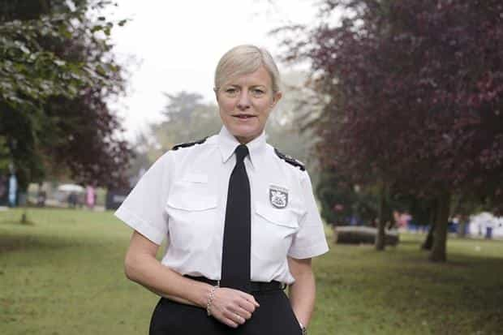

< < < Back
British Police: Men Who Try To Get Laid Are Guilty Of Misogynistic “Hate Crimes” – Return Of Kings
Are you less than 100% certain a girl will accept your approach? If not, do not approach them in Nottingham and maybe soon a host of other British cities. Nottingham Police have declared that “misogyny,” which they say includes “unwanted approaches,” is now a hate crime attracting significantly higher criminal penalties. The girl alone gets to decide if the intention of your interaction was misogynistic or not.
A police force revealed today it has become Britain’s first to recognise misogyny as a hate crime.
Nottinghamshire Police is recording incidents such as street harassment, verbal abuse, unwanted physical approaches and taking photographs without consent within the hate crime definition.
Unwanted physical or verbal contact or engagement is defined as exactly that and so can cover wolf whistling and other similar types of contact. If the victim feels that this has happened because they are a woman then we will record it as a hate crime.
According to the police instructions being distributed to frontline officers, when you use your cell phone to text a woman, she fails to reply and you text her back, this is now also a potential hate crime if she decides the messages are “unwanted” or “uninvited.” In fact, even the first message you send her can be classified as “unwanted” or “uninvited” and therefore a hate crime. By chance, have the feminist designers of the new law read and been offended by Roosh’s free texting guide? Other interesting triggers for this perfect example of misandry will be wolf-whistling and comments like “Hey, cutie!”
The new law, which has essentially been constructed from the “interpretation” of an existing law without any democratic process, applies only to men dealing with women and not either sexual minorities or heterosexual women interacting with men. Nottingham Police are taking it so seriously that men deemed to be behaving in a “misogynistic” fashion are already having their “crimes” and details recorded.
The architects of this fascistically feminist experiment are, in order of appearance, Chief Constable of Nottingham Police, Sue Fish, and the manager of Nottingham’s Women’s Center, Melanie Jeffs:
The United Kingdom’s very muddled system

The Nottingham Police debacle is not an isolated incident. The National Police Chiefs’ Council head, Sara Thornton, announced last year that, Britain-wide, online “threats” would take precedence over violent crimes like burglaries.
Despite the conventional belief that the British Parliament at Westminster is supreme, in practice local authorities, including the police, have substantial, legalized leeway in defining what constitutes crimes defined either by legislation or the common (judge-made) law. Westminster could theoretically end the sort of farces we have seen with the Nottingham Police this week. Nonetheless, a betting man would probably have a better chance successfully putting money on Britain getting rid of the Queen in the next five years than county and regional authorities being brought into a more democratic line line.
Consequently, substantial elements of British laws are subject to the vagaries of local, sometimes rampantly feminist officials and the very undemocratic fiefdoms they have cultivated. This is in addition to the wide discretion that police already have in prosecuting certain politically correct crimes over others. As I brought you last year, British police have already begun prioritizing “online abuse,” comprising often exaggerated internet exchanges that rarely result in actual harm, over far more violent burglaries and assaults. For all the criticisms that federal systems like the United States’ are convoluted, they often give better formal and informal political protections than unitary systems like Britain’s.
Why the law matters
Now illegal and a hate crime in Nottingham if the woman does not like it.
Game and its offshoots gained prominence because many men caught between the dating world of their fathers or grandfathers and a grotesquely politically correct “modern” world finally had a means for navigating through the apparent complexity of women. Oftentimes hypocritical female expectations, belief systems, and conduct became more manageable and less murky. Because game and related concepts expose women (and men) for the creatures they almost always are, they themselves and those who practice them are now in the direct line of fire from zealous feminists both within and outside government.
More generally, the new law reinforces the increasing subjectivity of bizarre attempts to criminalize decidedly non-harmful behavior. Rather than being based on a reasonable prospect of injury, especially of a physical kind, hate crimes like “misogyny” are being predicated on the feelings of already delicate individuals. Tellingly, a text message from a man to a woman, one that has zero evidence of any threats or violence, is being treated more severely than, say, fists and bottles being thrown in a nightclub or on the street (provided those being hit are not female).
The draconic move does not (*surprise, surprise*) include lesbians or straight women
“You have no right to look at the skimpy clothing that I have deliberately worn so everyone but you can see it!”
Unsurprisingly, given we are surrounded by a deplorably anti-male political climate, the criminalization of unwanted male approaches has not been extended to include either lesbians or straight females (or those identifying as starfish or attack helicopters). As even LGBT groups have complained that gay and lesbian domestic violence is at least equally prevalent as the alleged figures for male-on-female domestic violence, such omissions are glaring. In fact, on a topic I covered last year, lesbians in particular were found to be more prone to domestic violence than straight couples.
At its heart, this Nottingham Police “law” is aimed at simultaneously vilifying and criminalizing normal male behavior. Paradoxically, this is behavior that even otherwise indoctrinated Western women still want from men, such as men approaching first, being confident, and making the first move in other contexts, too.
Put bluntly, it’s really just a walking crime to be a man nowadays.
 If you like this article and are concerned about the future of the Western world, check out Roosh's book Free Speech Isn't Free. It gives an inside look to how the globalist establishment is attempting to marginalize masculine men with a leftist agenda that promotes censorship, feminism, and sterility. It also shares key knowledge and tools that you can use to defend yourself against social justice attacks. Click here to learn more about the book. Your support will help maintain our operation.
If you like this article and are concerned about the future of the Western world, check out Roosh's book Free Speech Isn't Free. It gives an inside look to how the globalist establishment is attempting to marginalize masculine men with a leftist agenda that promotes censorship, feminism, and sterility. It also shares key knowledge and tools that you can use to defend yourself against social justice attacks. Click here to learn more about the book. Your support will help maintain our operation.
Read More: British Police Chief Will Prioritize Online Abuse Reports Over Burglaries